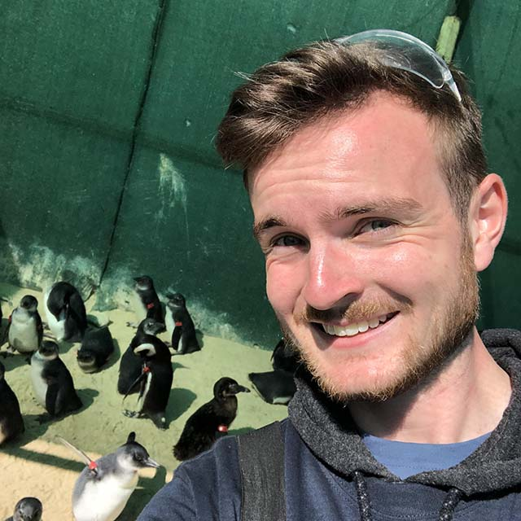

The Penguin Information Project is a website created for people to
learn more about all the different penguin species. The website also
operates as a means to increase awareness of penguin conservation
and the challenges penguin groups are facing as a result of humans.
In addition to the informative side of the website, we also have a
shop full of PIP merchandise, the profits of which go to penguin
rescue, rehabilitation and conservation charities.
About Me
Penguin ID

ID N°: #1
Name: Tommy Brader
Title: PIP Founder
Nationality: British
Favourite Penguin: African
My name is Tommy, I am from Birmingham in the UK and I am the
creator of PIP. I have always had a love for penguins and as a small
child I would often learn various penguin facts in between lessons
at school. Although this natural fascination waned as I got older,
penguins still held a special place in my heart. So much so that in
September 2019 I took advantage of the free time I had to go and
volunteer at a
penguin rescue and rehabilitation centre in Port Elizabeth, South
Africa (SANCCOB). Here I assisted in generally helping the centre run by making
formula for the penguins, preparing medication, washing equipment
and also cleaning and changing pens and pools. But of course this
was not all I did, I also worked hands on with the penguins! The
responsibilities here involved hand and tube feeding African
penguins of varying ages (from chicks to adults), letting the
penguins out to swim, helping with weighing and assessing the health
of the birds and also transporting them when necessary.
Penguin ID Maker
Enter your details here and your very own Penguin Identification Card
(like mine above) will be generated!